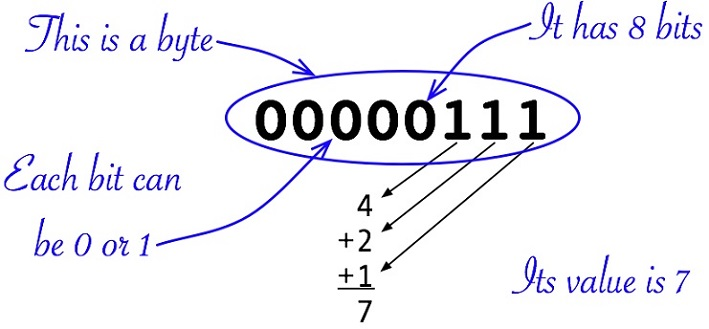

Variables and Data Types
The word variable means: Able to be changed or adapted. That definition also holds true for programming languages. We use variables to hold values, however, the value can change while the program is running. Think of it this way, not everyone has the same first name, so if I have a variable called firstName, different values can be saved at different times into the same variable. Computers understand ones and zeros, so giving meaningful names to our variables is for our benefit and not the computers. However, as you will see later, sequences of ones and zeros, or bytes, can look alike, so we need to tell the computer what type of information the variable will hold. We do this by including a data type with our variable name.
What does data look like?
Numbers:
Here is what the number 7 looks like in the computer. It has 29 zeros and 3 ones.
00000000000000000000000000000111
That is 32 bits in a row, which maybe a little overwhelming. So, we break up the bits into groups of 8 that we call bytes. (You have probably heard that term, like in a 250 gigabyte hard drive. That is 250 billion bytes!)
00000000 00000000 00000000 00000111
For the sake of discussion, we will not worry about the first 3 bytes since they are all zeros. We will just look at the last byte, which is 5 zeros and 3 ones.
00000111
The computer only understands base 2 (binary) arithmetic. The rightmost bit is the ones position, the next one to the left is the twos positions, next is the fours, etc. Please study the image below.

Characters:
What about letters? Here is what an uppercase A is in the computer:
01000001
Notice to the computer, letters and numbers look the same. In fact, the last byte of an uppercase A, is the same as the last byte in the number 65.
To distinguish letters, numbers, and other data, we must include the type of data that will be stored in our variable. Before we get into data types, let’s review our variable naming standards.
Naming Variables
Variables are a more human friendly way we keep track of data within our programs. Variables can represent input as well as output. For ease of maintenance and design, it is important to name variables so that their name reflects their intended purpose.
Can you identify the purpose of these variables?
a;
b;
c;
The above variable names do not meet our naming standards and it is difficult to deduce their intended purpose.
What about the following variables?
firstName;
salary;
count;
The above variable names meet our naming standards. Seen alone, count may not be very telling, however, within the context of a program, it would be.
Data Types
As we learned above, it is not enough just to say you want to use a variable. You must also tell what type of data the variable will hold. Data types are part of the programming language and designate what kind of data will be stored in the variable.
Primitive types vs Wrapper Classes
Remember Double with an uppercase “D” is a wrapper class in Java and that double with a lowercase “d” is its primitive type. Think of double with a lowercase “d” as a subset of the class Double. This same concept holds true for float, long, and boolean. Integer is the wrapper class for int. When declaring variables in Java, the primitive type is used most of the time. The concept of primitive types is not unique to Java. It is very important to remember that the data type String, in Java, is ALWAYS written with an uppercase “S”.
Below are some common data types and sample literal data that these data types could hold. Literal means the value is literally written in the code instead of coming from an outside source such as end-user input. Remember, a String literal is always within quotes.
Please study the table below.
| Java data type | Literal Example |
|---|---|
String |
"Wisconsin" |
double or Double |
59.25 |
float or Float |
59.25 |
int or Integer |
57 |
long or Long |
57 |
boolean or Boolean |
false |
Notice that both the double and float data types allow for a fractional number. In this course we mainly use double as it has more precision than a float. The difference between an int and long is that the long is capable of holding a larger whole number. Please note, these are not the only data types to identify a number variable.
An interesting thing about the word Boolean. Although in programming, boolean with a lowercase “b” is the primitive type of Boolean with an uppercase “B”, if you were writing a paper and used the word Boolean, it is always written with an uppercase “B”.
Variables and Data Types
With properly named variables, you should be able to match most variables to their intended data type. Let’s give that a try.
Remember these variables? It is impossible to determine the intended purpose and data types of these variables
a;
b;
c;
What about the following variables?
firstName;
salary;
count;
isValid;
Someone’s first name will be the value saved into the variable firstName. Names are a series of characters; in other words, names are strings. Some of you may have thought that salary could be an int, however, it is possible for someone's salary to be $15.43 per hour. In Program Logic, we will use the data type double when we need to represent a number that contains or can contain a decimal.
The variable count can be hard to determine when viewed outside of a program. Typically, count refers to whole items, so we can use the int data type. In Java, a boolean, with a lowercase “b”, only has two values, it is either true or false. When you see a variable like isValid, you can interpret the variable as "is this valid". The answer is always either true or false.
Declaring and Initializing Variables
You must declare variables before you can use them. Declare just means you must name the variable and its data type before you can use the variable. Remember, ORDER MATTERS! On the same line, first write the data type, followed by a space, and then the variable name.
Initialization of a variable, is when you give the variable a starting value at the time of declaration. Later in your code, you can set the variable to another value as necessary.
Please study the table below. The table shows you two ways to declare a variable. The first column shows implicitly initialized variables and the second column shows explicitly initialized variables. Remember, whether you explicitly initialize your variables or allow Java to implicitly initialize them, you must end the statement with a semicolon. The semicolon says you are finished with that statement.
| Java Code Example | Java Code with Explicit Initialization |
|---|---|
String firstName; |
String firstName = ""; |
double salary; |
double salary = 0.0; |
int count; |
int count = 0; |
boolean isValid; |
boolean isValid = false; |
Most high-level programming languages will implicitly initialize your variables, however, you may receive an error or warning if you try to use an uninitialized variable. One example of when this error can occur is if you use an uninitialized variable in a mathematical equation. Although Java will implicitly initialize your variables, best practice is for you to explicitly initialize your variables. The value of implicitly initialized variables may differ from one programming language to the next. Additionally, the implict value may not be what you thought.
String firstName = ""; OR
String firstName = null;
double salary = 0.0;
int count = 0;
boolean isValid = true;
Please study the above code. This code shows the typical initialization values for the String, double, int and boolean data types. Please do not assume that these are the only valid initialize values. Initialization values may need to be different based on how you code the program.
Again, whether you explicitly initialize your variables or allow Java to implicitly initialize them, you must end the statement with a semicolon. The semicolon terminates the statement, signifying you are finished with that statement.
After declaration, you can assign the value of one variable to be the value of another variable. Study the below code. Notice we declare and initialize count and maxCount. Then we set count equal to maxCount, which means we assign the value of maxCount to count. Therefore, after the line of code count = maxCount; executes, the value of count become the same as the value of maxCount. In our example that is 99.
int count = 0;
int maxCount = 99;
count = maxCount;
Remember, the value on the right side of the equals sign is always assigned to variable on the left side of the equals sign.
variableReceivingTheValue = variableGivingTheValue;
variableReceivingTheValue = literalGivingTheValue;
What You Learned
- Data types tell the programming language the type of data that will be stored in a variable
- Giving a variable a meaningful name will help you identify and properly manipulate the variable while writing your program
- Properly named variables give you a clue to its data type
- Variables can hold different values at different times throughout your program
- If you do not give your variables an initial value, Java will implictly assign one
- Variable declaration statements (explicity or implicityly initialized) must end with a semicolon
- The value on the right side of the equals sign is always assigned to variable on the left side of the equals sign.
Stringliterals are always within quotes
Test Your Knowledge - Interactive Activity
Test how well you retained what you learned by using this interactive activity. If you did not get 100% the first time, review the chapter and take it again.
What's next?
The next chapter in this unit is Named Constants
Remember, I also recommend you re-visit the learning activity for Naming Rules and Java Keywords.